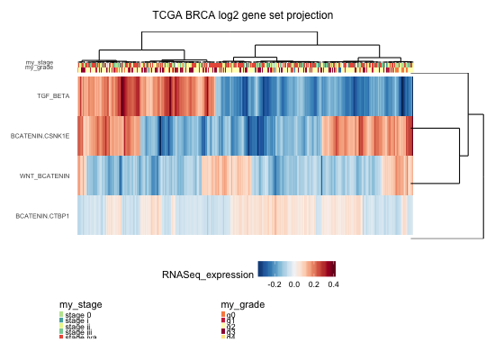

geneSetProjection maps a gene-level dataset to a
geneset-level dataset based on control-treatment pairing (i.e., the
ks score is done with respect to the 'control vs. treatment'
phenotype). It can be used to carry out 'single sample projection'
(the average of all samples is used as controls), as well as with
'time-series' data of response to treatment, where for each time
point there are several replicates for both the control and the
treated.
geneSetProjection(dat, pairing, GS, method = c("ks", "logistic", "median", "mean"), collapse = TRUE, weighted = TRUE, absolute = FALSE, min.gset = 5, verbose = TRUE)
ExpressionSet data object ( require(biobase) )
list with pairing between treatment and control (see format below)
one of "ks","logistic","median","mean" (only ks implemented so far)
collapse multiple replicates into a single output vector (TRUE)
gsea-like weighting of KS score (TRUE)
use absolute values when calculating the KS score ignoring up and down (FALSE)
verbosity on/off (TRUE)
GeneSet data object (see GeneSet.R)
an expression set
The format of 'pairing' is a list of lists (of sample names), of the form:
list(group1=list(control=c(s_111,..,s_11n),treatment=c(s_121,..,s_12n)), group2=list(control=c(s_211,..,s_21n),treatment=c(s_221,..,s_22n)), ...)
And the output ExpressionSet will have as many columns as either the number of groups (if collapse=TRUE), or the number of samples across all treatment groups (if collapse=FALSE)
# the very basic steps are: # 1) load the data (expression and genesets) # 2) rename the dataset by replacing probesetIDs by gene symbols ==> DB # 3) create the list of lists pairing ==> PAIRS # 4) run geneSetProjection(dat=DB,pairing=PAIRS,gset.db=GSET, ...) ## 1) LOAD the data ## data(gspData) if (is.null(gsp.eSet)) stop("is.null(gsp.eSet)") if (is.null(gsp.GeneSet)) stop("is.null(gsp.GeneSet)") ## 2) RENAME the dataset rows (w/ gene symbols) DAT1 <- gsp.eSet[fData(gsp.eSet)[,"symbol"]!="",] exprs(DAT1) <- log2(exprs(DAT1)+1) featureNames(DAT1) <- toupper(fData(DAT1)[,"symbol"]) ## 3) CREATE the list of lists pairing (one group only) ANidx <- pData(DAT1)[,"tissue_type"]=="AN" PAIRS <- list(OSCC=list(control=sampleNames(DAT1)[ANidx], treatment=sampleNames(DAT1)[!ANidx])) ## 4) RUN geneSetProjection .. ## GSPdir <- geneSetProjection(dat=DAT1, pairing=PAIRS, GS=gsp.GeneSet, collapse=FALSE, # single-sample projection weighted=FALSE, # standard KS score, no weighting absolute=FALSE, # keep sign of enrichment scores min.gset=5, verbose=TRUE)#> Projecting 1 groups .. #> > group OSCC .. [ 31 / 315 ] #> Checking genesets .. Done checking. #> .......................................................................................................................................................................................................................................................................................................................................................... done.## shortening pathway names for better visualization featureNames(GSPdir) <- c("WNT_BCATENIN","BCATENIN.CSNK1E","BCATENIN.CTBP1","TGF_BETA") gradeID <- 'my_grade' stageID <- 'my_stage' p2 <- heatmap.ggplot2(eSet=GSPdir,col.clust=TRUE,row.clust=TRUE, col.lab=c(gradeID,stageID),row.lab="", heatmap.y.text=TRUE, heatmap.x.text=FALSE, heatmap.colorlegend.name="RNASeq_expression", title.text="TCGA BRCA log2 gene set projection", col.legend.name=c(gradeID,stageID), row.legend.name="", row.scaling="none",z.norm=FALSE, cuttree.col=0, cuttree.row=0, verbose=FALSE, show=TRUE)#> Warning: `axis.ticks.margin` is deprecated. Please set `margin` property of `axis.text` instead#> Warning: `panel.margin` is deprecated. Please use `panel.spacing` property instead#> Warning: `legend.margin` must be specified using `margin()`. For the old behavior use legend.spacing#> TableGrob (2 x 1) "arrange": 2 grobs #> z cells name grob #> 1 1 (1-1,1-1) arrange text[GRID.text.12] #> 2 2 (2-2,1-1) arrange gtable[arrange]grid.arrange(p2)